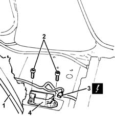
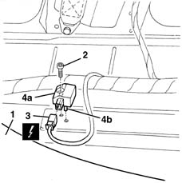

5580C40 SIDEBAG SENSOR (ONE), LH OR RH - R R
- Path
- Procedures > 55 ELECTRICAL EQUIPMENT > 5580 SPECIAL ACCESSORIES > 5580C AIR BAG SYSTEM > 5580C40 SIDEBAG SENSOR (ONE), LH OR RH - R R
- Kind
- repair procedure (removal / refitting; the operation number is the code)
- Applies to
- all engines; all production periods
- Interactive page
- https://sloeber94.github.io/elrnDB-fMltpl/en/#/2891975
Applies to: all engines; production: fino a 05/99, da 06/99 a 03/02
Applies to: all engines; production: fino a 05/99, da 06/99 a 03/02; only with equipment: ESP
 Removing
Removing
 Refitting
Refitting7045A10 l/h or r/h front seat (one) - r+r
(side on which to work)
7040B46 luggage belt ring - r r
(centre pillar area)
1. Lift up the end of the front carpet and the sound insulation underneath.
2. Undo the bolts.
3. Disconnect the electrical connection for the sensor.
 | Name | Connector |
|---|---|---|
3 | Sensor for driver's Side Bag |
| Name | Connector |
|---|---|---|
3 | Sensor for passenger Side Bag |
4. Recover the Side Bag sensor.

Applies to: all engines; production: fino a 05/99, da 06/99 a 03/02; only with equipment: ESP
Refitting
RemovingCheck that the sensor is not damaged.
Connect the electrical connection.
Position the sensor and secure it using the bolt.
Place the sound insulation and the front carpet in position.
7040B46 luggage belt ring - r r
7045A10 l/h or r/h front seat (one) - r+r
Check the operation of the Air Bag system using the Examiner or another tester.
Applies to: all engines; production: fino a 05/99, da 06/99 a 03/02
Applies to: all engines; production: da 09/03, da 04/02 a 08/03, da 06/04, fino a 05/04
Removing
Refitting7045A10 l/h or r/h front seat (one) - r+r
7040B46 luggage belt ring - r r
1. Lift up the end of the front carpet and the sound insulation underneath.
2. Undo the bolt.
3. Disconnect the electrical connection for the sensor.
| Name | Connector |
|---|---|---|
3 | Sensor for driver's Side Bag |
| Name | Connector |
|---|---|---|
3 | Sensor for passenger Side Bag |
4. Keep the sensor (4a) releasing the pin (4b).

Applies to: all engines; production: da 09/03, da 04/02 a 08/03, da 06/04, fino a 05/04
Refitting
RemovingCheck that the sensor is not damaged.
Reconnect the electrical connection.
Position the sensor and secure it using the bolt.
 | Fastening | Component | Ø | Value (daNm) |
|---|---|---|---|---|
- | Bolt | SIDE AIR BAG SATELLITE SENSOR | M6 | 08 |
Place the sound insulation and the front carpet in position.
7040B46 luggage belt ring - r r
7045A10 l/h or r/h front seat (one) - r+r
Connect the battery.
Check the operation of the system using the Examiner or another tester.